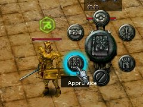

|
การรับลูกศิษย์ หรือขอเป็นลูกศิษย์ ทำได้โดยผู้ที่เป็นอาจารย์ต้องมี
Level มากกว่า ทำได้โดยการกดปุ่ม Shift ค้างไว้ แล้วเลือกไปยังคนที่ต้องการขอเป็นอาจารย์
หรือขอเป็นลูกศิษย์แล้วกดคลิ๊กซ้าย จะมีเมนูย่อยออกมา ให้เลือกอันซ้ายล่าง
จะเป็นการขอเป็นลูกศิษย์

เมื่อเป็นศิษย์ - อาจารย์กันแล้ว ต้องรักษาความสัมพันธ์ไว้ อาจารย์ต้องมี
Level มากกว่าลูกศิษย์เสมอ ไม่อย่างนั้นแล้ว ความสัมพันธ์จะสิ้นสุดลง
โดยการเป็นศิษย์ - อาจารย์กันนั้น จะส่งผลในหลายๆ ด้าน
|